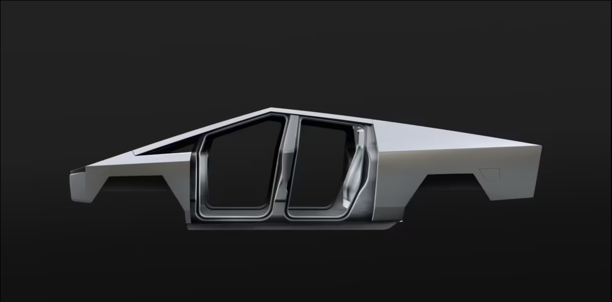
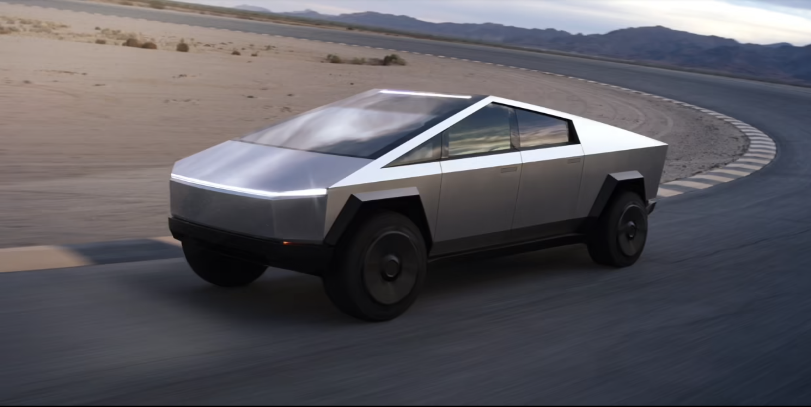

Exoskeleton
Cybertruck is built with an exterior shell made for ultimate durability and passenger protection. Starting with a nearly impenetrable exoskeleton, every component is designed for superior strength and endurance, from Ultra-Hard 30X Cold-Rolled stainless-steel structural skin to Tesla armor glass.
Ultrahard, 30X cold-rolled stainless steel
If there was something better, we’d use it. Help eliminate dents, damage and long-term corrosion with a smooth monochrome exoskeleton th puts the shell on the outside of the car and provides you and your passengers maximum protection.
Tesla armored glass
Ultra-strong glass and polymer-layered composite can absorb and redirect impact force for improved performance and damage tolerance.